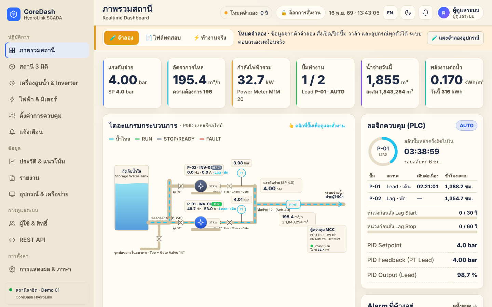
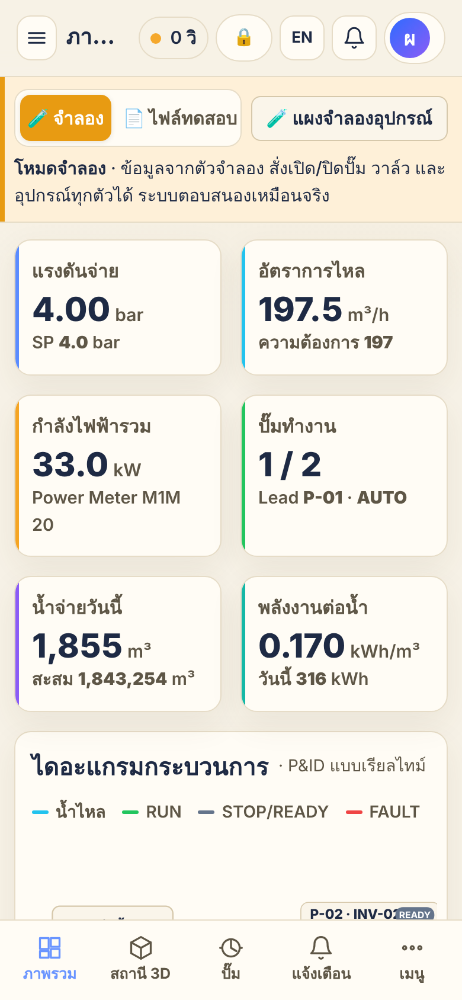

ควบคุมแรงดันด้วย PID
ปรับรอบ Inverter อัตโนมัติให้แรงดันจ่ายคงที่ตามค่าที่ตั้ง ประหยัดไฟกว่าวาล์วหรี่ และลดแรงกระแทกในท่อ
CoreDash HydroLink คือ SCADA บนเว็บและมือถือสำหรับสถานีสูบจ่ายน้ำ ควบคุมแรงดันด้วย PID สลับปั๊มอัตโนมัติ แจ้งเตือนเข้า LINE และเชื่อมระบบอื่นผ่าน REST API โดยไม่ต้องลงโปรแกรม


ออกแบบจากการใช้งานจริงของช่างและผู้ดูแลระบบน้ำ อ่านง่ายบนมือถือ สั่งงานได้อย่างปลอดภัย และตรวจสอบย้อนหลังได้ทุกคำสั่ง
ปรับรอบ Inverter อัตโนมัติให้แรงดันจ่ายคงที่ตามค่าที่ตั้ง ประหยัดไฟกว่าวาล์วหรี่ และลดแรงกระแทกในท่อ
สลับปั๊มหลักตามรอบเวลา เรียกปั๊มช่วยเมื่อแรงดันไม่ถึง และแสดงเวลาถอยหลัง ชั่วโมงสะสมของแต่ละตัว
คลิกปั๊มบน P&ID เพื่อเปิด Faceplate ปลดล็อกด้วย PIN ส่วนตัว ยืนยันก่อนสั่งทุกครั้ง และบันทึกลง Audit Log
ส่ง Alarm ตามระดับความรุนแรงไปที่ LINE OA, Telegram และ Email พร้อมรับทราบ (ACK) และประวัติย้อนหลัง
กราฟย้อนหลังทุกค่า รายงานรายวัน/เดือน ปริมาณน้ำ พลังงาน kWh/m³ ส่งออก CSV และพิมพ์ PDF
เชื่อมกับ ERP, BI หรือ BMS ได้ทันที มี OpenAPI Spec, API Key แยกสิทธิ์, จำกัดอัตรา และเข้ารหัส AES-256
ลอจิกควบคุมยังอยู่ใน PLC หน้างานเสมอ HydroLink อ่านค่าผ่าน CoreDash Edge Gateway แล้วส่งขึ้นเว็บอย่างปลอดภัย
P&ID เรียลไทม์ · KPI · ลอจิกควบคุม
ได้ HydroLink อ่านข้อมูลผ่าน Modbus TCP / RTU และ MQTT ผ่าน CoreDash Edge Gateway เพียงแก้ Register Map ในไฟล์ตั้งค่า ตัวอย่างในเดโมคือ PLC Mitsubishi FX5U กับ Inverter ABB ACS580
ทำงานต่อตามปกติ ลอจิกควบคุมอยู่ใน PLC หน้างาน ส่วน Gateway เก็บข้อมูลไว้ในเครื่องแล้วส่งขึ้นเมื่อเชื่อมต่อกลับมา
ได้ 3 แบบ: โหมดจำลองในเบราว์เซอร์ อัปโหลดไฟล์ทดสอบ JSON เพื่อเล่นเหตุการณ์ (เช่น ปั๊มเสีย ไฟดับ) และต่อ Gateway จริงเมื่อพร้อม
HTTPS ทุกการเชื่อมต่อ สิทธิ์ผู้ใช้ 3 ระดับ PIN สำหรับสั่งงาน Audit Log ทุกคำสั่ง และเลือกเข้ารหัสข้อมูล API ด้วย AES-256-GCM ได้
ลองเดโมได้ทันที หรือคุยกับทีมเพื่อประเมินหน้างานและ Register Map ของคุณ